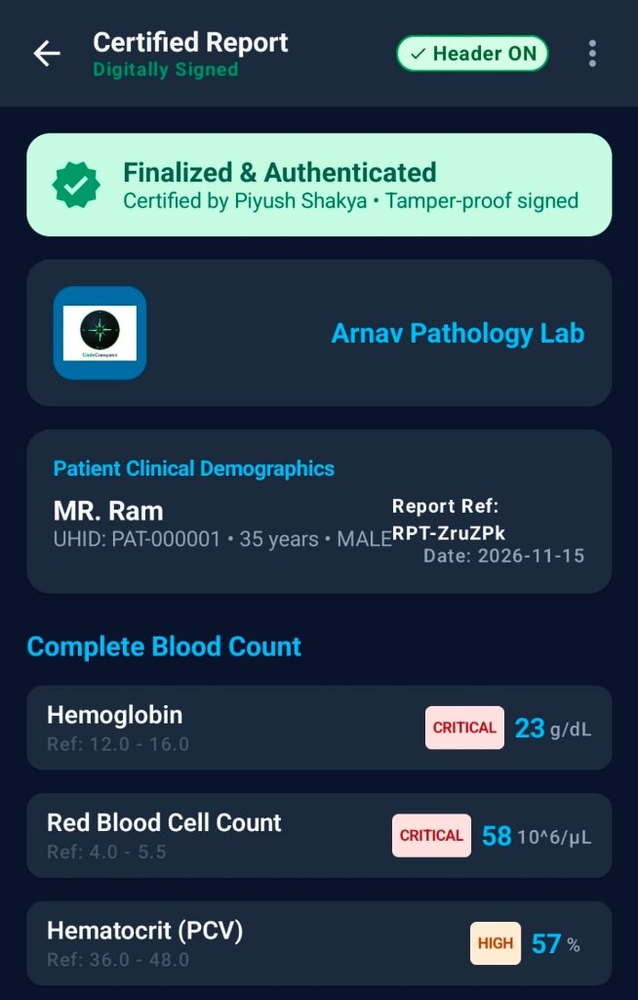
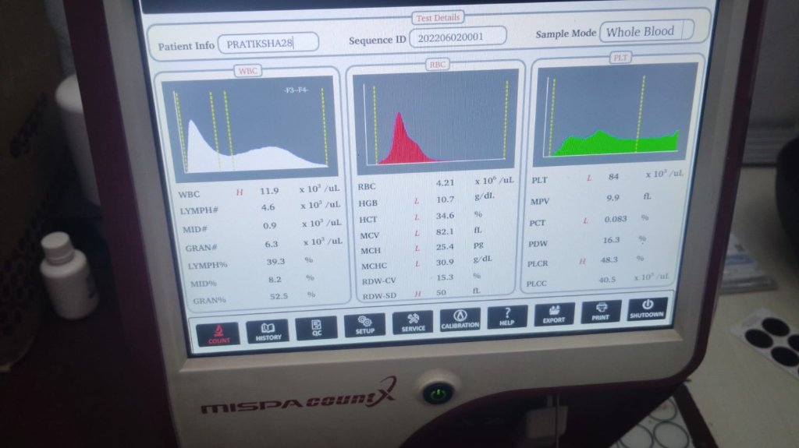
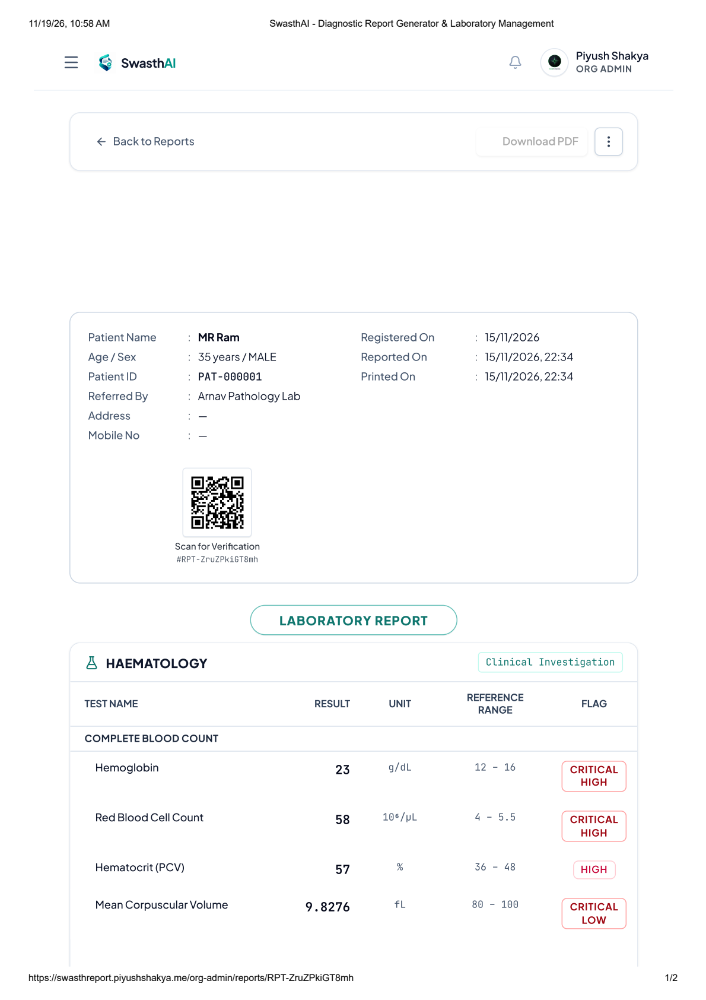
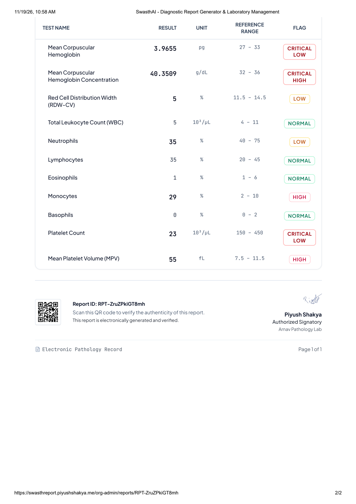
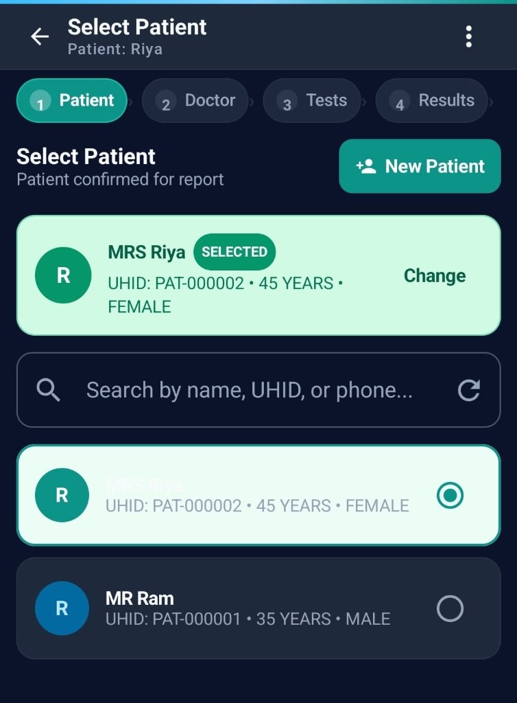
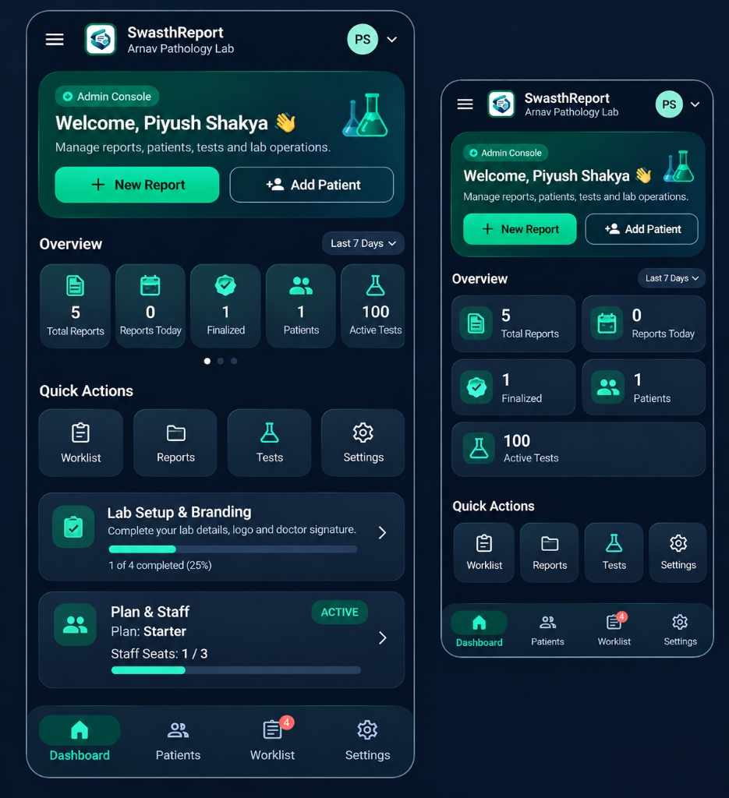

A production-grade mobile health solution engineered with Android Jetpack Compose and Spring Boot REST Services. It bridges the critical communication gap between raw hardware analyzer screens and patient-friendly certified medical reports.

Hematology and biochemistry machines output raw numbers and statistical histograms (e.g. WBC 11.9 H, PLT 84 L, RDW-SD 50 H). Patients and non-specialists cannot interpret these raw parameters without immediate panic or confusion.
Technicians manually transcribe values from machine screens into Word or Excel templates. Manual calculations for absolute differentials, MCV/MCH checks, and indices are highly prone to fatal human error and transcription slips.
Physical paper reports take hours or days to prepare. Patients must travel back to the lab to collect them. Physical sheets get lost, damaged, or easily forged without any digital seal or cryptographic verification mechanism.


Register patient once or select from the database via UHID, phone number, or name. Captures age, gender, and referring physician.
Select test panels (Complete Blood Count, Lipid Profile, LFT). Technicians enter parameters in an intuitive, keyboard-optimized UI.
The built-in clinical engine automatically calculates absolute counts, RDW ratios, and hematocrit flags with biological guardrails.
Authorized clinician endorses with digital signature. Generates official PDF with a scannable verification QR seal for instant sharing.
• Zero Anxiety: Color-coded badges make results instantly understandable.
• No Waiting: Instant PDF delivery directly on WhatsApp or Smartphone.
• UHID History: Lifelong digital record for second opinions.
• Tamper-Proof: Verifiable QR seal proves authenticity to doctors.
• 90% Faster: Drafts complete diagnostic reports in under 90 seconds.
• Zero Math: Differential counts and indices computed automatically.
• Error Guardrails: Alerts technicians if values contradict biological limits.
• Mobile Agility: Operates on standard Android phones and tablets.
• Instant Triaging: Critical high/low parameters are immediately prominent.
• Consistent Layout: Standardized intervals eliminate formatting discrepancies.
• Pathologist Endorsement: Timestamped signatures ensure legal validity.
• Low Capex: Eliminates legacy $5,000+ desktop LIMS licenses.
• Cloud Sync: Centralized multi-branch records stored on PostgreSQL.
• Brand Identity: Custom lab logo, letterhead header, and license controls.
Instead of cryptic strings, parameters are tagged with CRITICAL HIGH, NORMAL, or CRITICAL LOW. Patients know immediately whether they require urgent medical intervention.
Eliminates the agonizing wait in crowded lab reception areas. Patients receive the digital report within minutes of test completion.
Scanning the report QR code with any smartphone instantly verifies the authenticity directly from the lab server, eliminating forged diagnostic sheets.

Instant search by UHID, phone, or name with visual age/gender badges.

Test catalog, real-time math calculation, and differential counts.

Daily test quota, live lab metrics, and rapid draft resume actions.
• 100% Kotlin & Jetpack Compose: Modern reactive UI without XML fragmentation.
• Clean Architecture + MVVM: Strict separation of UI, Domain, and Data layers.
• StateFlow & Coroutines: Asynchronous thread safety with zero UI stutters.
• Crash-Hardened Engine: Localized try-catch (Throwable) shields around Bitmaps (OOM protection), PDF FileProviders, and Intent Choosers.
• Java Spring Boot REST API: Enterprise grade business logic & transactions.
• PostgreSQL Relational DB: ACID-compliant patient diagnostic schemas.
• JWT TokenAuthenticator: Transparent single-flight access token renewal.
• Server-Side iText Engine: High-performance vector PDF rendering with cryptographic QR generation.
• Turnaround Time: Reduced from 15 minutes to < 90 seconds (90% gain).
• Transcription Errors: Reduced to 0% with auto-differential algorithms.
• App Binary Size: Compact ~16.6 MB footprint targeting Android 8 to 15.
• Multi-Tenant Data Isolation: Laboratory records strictly segregated.
• Tamper-Evident Logs: Every report finalization records pathologist credentials.
• PhonePe Indus Appstore Ready: Built with release keystore & SDK 35 compliance.
A production-ready Android LIMS ecosystem that modernizes pathology operations, eliminates error-prone transcription, and provides patients with transparent, certified medical reports.
Brings digital diagnostic capabilities to grassroots and tier-2/3 diagnostic centers, democratizing healthcare transparency for millions of patients.
• OCR Machine Vision: Photograph analyzer screens to auto-fill inputs.
• AI Trend Commentary: Longitudinal AI blood biomarker trend insights.
• ABHA Integration: Linking with India's Ayushman Bharat Digital Health Mission.